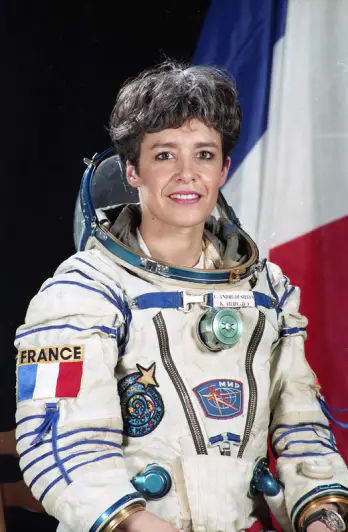

Claudie Haigneré : astronaute et féministe, une femme à multiples vies
Claudie Haigneré est née en 1957 dans le Creusot. Après de longues études orienté dans les sciences, elle réussit à être la première astronaute française à partir dans l’espace en 1996. Elle décida ensuite de s’orienter dans une carrière politique en étant la ministre déléguée à la recherche et aux nouvelles technologies. Aujourd’hui elle est revenue à l’agence spatiale européenne pour préparer les futures missions lunaires. Elle se bat également contre les inégalités faites aux femmes dans les carrières scientifiques. On va donc s’intéresser maintenant aux exploits qu’elle a pu réaliser et de son combat pour que les jeunes filles puissent se lancer dans les études scientifiques.
Une femme talentueuse
Claudine Haigneré a de grandes facilités à l’école. Elle obtient son baccalauréat à l’âge de 15 ans et décida ensuite de s’orienter dans des études de médecine à Dijon. Elle réussit son doctorat de médecine après 8 ans d’études. Claudine Haigneré ne va pas s’arrêter la car elle poursuivra ses études dans la médecine aéronautique et spatiale, dans la rhumatologie et dans la biomécanique et physiologie du mouvement. Elle finira ses études par une thèse de physiologie neurosensorielle. Ce long parcours lui vaudra le surnom de «bac+19».
En 1985 Claudine Haigneré a été sélectionné par le C.N.E.S (centre national d’études spatiales) pour participer à une mission spatiale de 16 jours. Aujourd’hui elle est la seule et la première femme française à avoir voyagé dans l’espace. En 2001 elle retourna de nouveau dans l’espace mais cette fois-ci pour une mission de 9 mois. Après ces 2 missions, elle laissa de coté sa vie d’astronaute pour partir dans la politique.
En 2002 elle intègre le ministère en étant ministre déléguée à la recherche et aux nouvelles technologies. Mais finalement Claudine Haigneré veut continuer sa carrière dans l’agence spatiale européenne. Ce parcours de vie incroyable fait l’objet d’exemple et de modèle pour les jeunes filles / étudiantes qui veulent devenir astronaute.
son combat pour l’égalité
Aujourd’hui, Claudine Haigneré participe régulièrement à des conférences pour encourager d’autres femmes/jeunes étudiantes, de se lancer dans la science. Elle a réalisé récemment une interview sur «TV5monde» où elle explique à des lycéennes que tout est possible et qu’il ne faut plus hésiter à se lancer. Cette interview est dans le cadre de l’association «capital filles» où elle est la marraine. Cette association consiste à promouvoir les jeunes filles issues de quartiers modestes pour qu’elles puissent bénéficier d’une formation qualifiante et pour avoir une meilleure mixité des métiers.
Elle dénonce la disparité entre les hommes et les femmes dans le métier d’astronaute, à peine 10% de femmes ce qui est très peu. Elle dénonce également les préjugés qui font apparaitre ces disparités dans ces métiers. Elle voudrait briser ces stéréotypes par le biais de l’éducation, en parler dès le plus jeune âge pour que les jeunes filles n’aient plus peur de se lancer.
Claudie Haigneré prend conscience aussi du plafond de verre. Le plafond de verre est une expression qui montre les freins invisibles dans les domaines où la femme est minoritaire. En astronomie par exemple, le plafond de verre est bien présent. Elle veut donner goût aux jeunes filles pour que ces métiers soient plus égalitaires et moins stéréotypés.

N’hésitez pas à voir aussi
Les avancées du féminisme dans la science